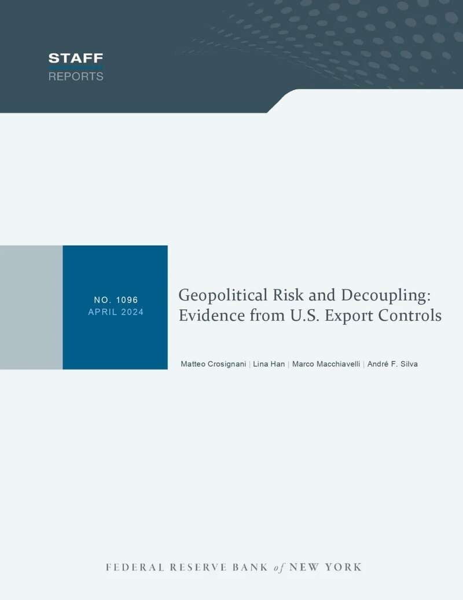
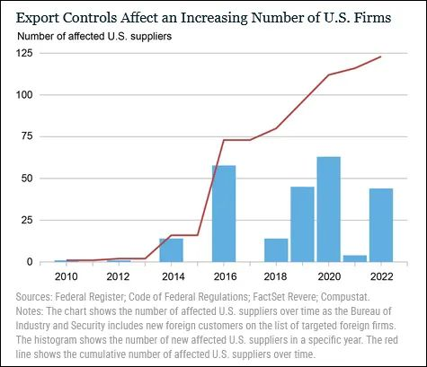
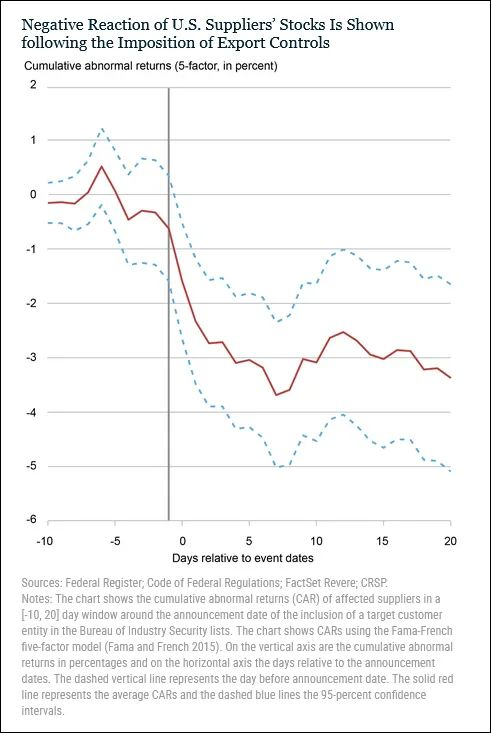

近年来，美国泛化国家安全概念，不断升级加码对华半导体等先进技术领域打压，美国商务部工业和安全局（BIS）手中一系列“出口管制清单”在其中扮演重要角色。就在本周，拜登政府还被曝8月将把120家中国相关行业实体列入限制名单，引发担忧。
不过，美国联邦储备委员会下属的纽约联邦储备银行（简称纽约联储）日前一份报告发现，这些原本旨在“保护”美国企业的出口管制措施，反而对美国企业造成了负面影响，包括供应链中断、运营成本上升和市场竞争力下降等，据估算，这一系列操作数年来令相关企业损失市值高达1300亿美元。与此同时，中国企业却通过寻找新供应商、加强自身研发等，努力抵消了美方措施的负面影响。

报告《地缘政治风险与脱钩：来自美国出口管制的证据》封面 纽约联储网站
这份名为《地缘政治风险与脱钩：来自美国出口管制的证据》的报告指出，从2010年到2022年，受到BIS管制被禁止向电信、运输、电子设备领域外国企业出口特定商品和服务的美国供应商数量不断增加。

据悉，受此影响，美国企业倾向于终止与中国企业的合作关系，无论对方是否受到出口管制针对，报告称此为“‘脱钩’现象的长期存在”。然而，报告同时发现，数据显示，在美方实施出口管制的三年内，这些受影响的美国企业也没有和美国国内或非出口管制目标的盟国客户建立新的供应链关系。
由于无法迅速找到替代客户，这部分企业的盈利能力持续受到挑战。数据显示，出口管制政策导致相关美国企业收入平均下降8.6%，息税前利润平均下滑25%。这些美国企业因此被迫减少了就业岗位，以适应出口管制的负面后果。报告所引用的数据显示，受出口管制影响的美国企业雇员总数下降了7.1%。
报告也从财务、融资等领域评估了美国对华出口管制对美国企业的实际影响，发现这些措施给美国企业带来“重大的附带损害”。
具体而言，报告发现，一旦中国公司被列入BIS出口管制清单，受影响的美国企业将经历股价异常下跌。平均而言，一项对华出口管制措施宣布后20天内，相关美国企业遭遇的股价下跌幅度为2.5%，也即平均损失8.57亿美元的市值。纽约联储估算，近年来，所有受对华出口管制影响的美国企业市值总计因此“蒸发”1300亿美元。

此外，受出口管制影响的美国企业在融资时也更加困难，其申请银行贷款面临更高利息、更短期限。报告表示，这不仅在短期内加剧了这些企业的财务困境，长期内也可能对美国企业的创新和竞争力产生深远影响。资金短缺将限制企业在研发和市场拓展方面的投入，使其在技术进步和市场竞争中处于不利地位。
与此同时，报告观察到，受美方出口管制影响的中国企业通过形成新的替代中国供应商网络，以及增加从不受美国出口管制影响且与之已有合作关系的企业的采购，抵消了美国对华出口管制的负面影响。“与受到出口管制打击的美国公司相比，中国公司有可能更快、更有效地进行转岸（指改变供应商），因为中国的大型国有企业享有更强的协调能力。”
报告称，荷兰光刻机公司阿斯麦（ASML）就是中国这种战略反应的一个实例。“虽然美国的出口管制限制了美国制造的微芯片技术流向中国，但中国却设法增加了对ASML光刻机的采购，以生产尖端微芯片。直到几年后，在美国的巨大压力下，荷兰政府才限制了ASML向中国出口机器的能力。”
不仅如此，报告还特别强调，有证据表明，美国对华出口管制产生了“意想不到的结果”，即促进中国国内的新一轮自主创新。这些措施不仅帮助中国企业降低了对美国技术的依赖，也增强了其在全球市场的竞争力。
值得一提的是，美国芯片巨头英伟达CEO黄仁勋曾不止一次公开表示，中国市场体量无可替代，美国限制对华出口高端芯片，反会令美国半导体企业备受掣肘，为本国科技行业带来“巨大损害”。去年11月，黄仁勋出席美国《纽约时报》活动时说，目前中国有多达50家公司正在开发可与英伟达产品竞争的技术，中国可以找到获得这种技术或“激励”国内芯片制造商的方法。
他还提到，英伟达的产品依赖来自世界各地的无数组件，尽管他认为中美芯片“脱钩”这一道路“绝对应该走下去”， 但在未来10或20年内，供应链完全独立是不现实的。据新加坡《联合早报》，黄仁勋在活动中重申公司对中国市场的承诺，称中国仍然是最大的芯片市场，而英伟达是一家为商业而生的公司，因此尽力与所有人开展业务。
事实上，为应对拜登政府出口限制，英伟达已经针对中国大陆市场推出三款基于其AI芯片H100的“降级版”产品：H20、L20和L2。近日还有外媒报道称，英伟达正为中国大陆市场开发全新的旗舰AI芯片B20。然而，美国石英财经网站上月报道称，投资银行杰富瑞集团在给客户的一份报告指出，美国正考虑推出新的贸易管制措施，以阻止英伟达销售中国特供H20芯片，此举或造成英伟达120亿美元的损失。
除了“动员”本国企业，美国还一直试图施压盟友加码对华芯片打压。彭博社7月17日报道披露，美国正施压日本和荷兰等盟国企业，计划进一步收紧对华芯片出口限制。7月31日，路透社又援引消息独家报道称，拜登政府预计将于8月修订“外国直接产品规则”，调低决定外国产品受到美国管制的美国成分含量下限，弥补漏洞。
不过，彭博社当时分析认为，拜登政府的处境很尴尬：一方面，美国半导体公司持反对态度，认为当前对华贸易政策适得其反，损害了美企自身利益；同时，此时距11月美国大选仅剩几个月，美国盟友们认为不必改变政策。这恰恰表明，美国联合盟友组建“对华芯片统一战线”的努力失败了。
对此，中国外交部发言人林剑7月31日表示，中方已多次就美国恶意封锁打压中国半导体产业阐明严正立场。美方将经贸科技问题政治化、泛安全化、工具化，不断加码对华芯片出口管制，胁迫别国打压中国半导体产业，严重破坏国际贸易规则，损害全球产供链稳定，不利于任何一方，中方对此一贯坚决反对。
“我要强调的是，遏制打压阻挡不了中国的发展，只会增强中国科技自立自强的决心和能力。中方将密切关注有关动向，坚决维护自身合法权益。希望相关国家坚决抵制胁迫，共同维护公平、开放的国际经贸秩序，真正维护自身的长远利益。”